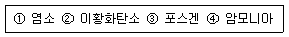
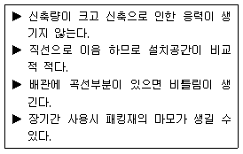

가스기능장 (2008-03-30 기출문제)
1과목: 임의 구분
1. 도시가스사업자가 관계법에서 정하는 규모 이상의 가스 공급시설의 설치공사를 할 때 신청서에 첨부할 서류가 아닌 것은?
- 공사계획서
- 공사공정표
- 시공관리자의 자격을 증명할 수 있는 사본
- 공급조건에 관한 설명서
(정답률: 96%)

2. 옥탄 (C8H18)이 완전연소 하는 경우의 공기-연료비는 약 몇 kg공기/kg 연료인가? (단, 공기의 평균분자량은 28.97로 한다.)
- 15.1
- 22.6
- 59.5
- 70.5
(정답률: 39%)
3. 물의 전기분해로 수소를 얻고자 할 때에 대한 설명으로 옳은 것은?
- 황산을 전해액으로 사용하면 수소는 (+)극, 산소는 (-)극에서 발생한다.
- 수산화나트륨을 전해액으로 사용하면 수소는(-극), 산소는(+)극에서 발생한다.
- 물에 염화나트륨 용액을 넣고 교류 전류를 통하면 수소만 발생한다.
- 전해조를 이용하여 수소와 산소의 혼합 가스로 발생한 것을 분리시킨다.
(정답률: 79%)
4. 1kg의 공기가 90℃에서 열량 300kcal를 얻어 등온팽창 시킬 때 엔트로피 변화량은 약 몇 cal/kgㆍk 인가?
- 0.643
- 0.723
- 0.826
- 0.917
(정답률: 56%)
5. 가스용품제조사업의 기술기준으로 조정 압력이 3.3kpa이하인 조정기 안전장치의 작동 표준압력은 몇 kpa로 되어 있는가?
- 2.8
- 3.5
- 4.6
- 7.0
(정답률: 52%)
6. 다음 관의 신축량에 대한설명으로 옳은 것은?
- 신축량은 관의 열팽창계수, 길이, 온도차에 비례한다.
- 신축량은 관의 열팽창계수, 길이, 온도차에 반비례한다.
- 신축량은 관의 열팽창계수에 비례하고 온도차, 길이에 반비례한다.
- 신축량은 관의 길이, 온도차에는 비례하고 열팽창계수에 반비례한다.
(정답률: 75%)
7. 허가를 받지 않고 LPG 충전사업, LPG 집단 공급사업, 가스용품 제조사업을 영위한 자에 대한 벌칙으로 옳은 것은?
- 1년 이하의 징역, 1000만원이하의 벌금
- 2년 이하의 징역, 2000만원이하의 벌금
- 1년 이하의 징역, 3000만원이하의 벌금
- 2년 이하의 징역, 5000만원이하의 벌금
(정답률: 88%)
8. 다음 [보기]에서 독성이 강한 순서대로 나열된 것은?

- ①＞③＞④＞②
- ③＞①＞②＞④
- ③＞①＞④＞②
- ①＞③＞②＞④
(정답률: 84%)
9. 액화탄산가스 100kg을 용적 50L의 용기에 전시키기 위해서는 몇 개의 용기가 필요한가? (단, 가스충전 계수는 1.47 이다.)
- 1
- 3
- 5
- 7
(정답률: 88%)
10. PVn=C에서 이상기체의 등온변화의 폴리트로픽지수(n)는? (단, k는 비열비이다.)
- k
- ∞
- 0
- 1
(정답률: 73%)
11. 비중량이 1.22kgf/m3, 동점도 계수가 0.15×10-4m2/s 인 건조공기의 점성계수는 약 몇 poise 인가?
- 1.83×10-4
- 1.23×10-4
- 1.23×10-6
- 1.83×10-6
(정답률: 56%)
12. 관의 절단. 나사절삭, 거스러미(burr)제거 등의 일을 연속적으로 할 수 있으며, 관을 물린 척(chuck)을 저속 회전시키면서 나사를 가공하는 동력나사절삭기의 종류는?
- 다이헤드식
- 호브식
- 오스터식
- 피스톤식
(정답률: 89%)
13. 다음 중 에틸렌의 공업적 제법으로 가장 적당한 방법은?
- 나프타의 수첨분해 반응
- 나프타의 고리화 반응
- 나프타의 열분해 반응
- 나프타의 이성화 반응
(정답률: 88%)
14. 다음 중 고압가스 제조설비의 사용개시 전 점검사항이 아닌 것은?
- 제조설비 등에 있는 내용물의 상황
- 비상전력 등의 준비사항
- 개방하는 제조설비와 다른 제조설비 등과의 차단사항
- 제조설비 등 당해 설비의 전반적인 누출 유무
(정답률: 66%)
15. 다음 중 가장 고압의 측정에 사용되는 압력계는?
- 벨로우즈식
- 침종식
- 다이어프램식
- 브르돈관식
(정답률: 67%)
16. 내용적 40L의 용기에 20℃에서 게이지압력으로 139기압 까지 충전된 수소가 공기 중에서 연소했다고하면 약 몇 kg의 물이 생성 되겠는가? (단, 이상기체로 간주하고, 표준 상태에서 연소하는 것으로 한다.)
- 2.1
- 4.2
- 116.5
- 233
(정답률: 50%)
17. 다음 아세틸렌의 성질에 대한 설명 중 틀린 것은?
- 아세틸렌을 수소첨가반응 시키면 벤젠이 얻어진다.
- 비점과 융점의 차가 적으므로 고체 아세틸렌은 승화한다.
- 물에는 녹지 않으나 아세톤에는 잘 녹는다.
- 공기 중에서 연소시키면 3500℃ 이상의 고온을 얻을 수 있다.
(정답률: 72%)
18. 나사압축기의 특징에 대한 설명으로 옳은 것은?
- 용량의 조정이 용이하다.
- 소음방지 장치가 필요 없다.
- 저속회전이므로 소용량에 적합하다.
- 토출압력의 변화에 의한 용량 변화가 적다.
(정답률: 50%)
19. 도시가스의 부취제에 대한 설명으로 옳은 것은?
- TBM (tertiary buthyl mercaptan)은 보통 충격의 석탄가스 냄새가 난다.
- DMS (dimethyl sulfide)는 공기 중에서 일부 산화되며, 내산화성이 약한 단점이 있다.
- T HT (tetra hydro thiophen)는 화학적으로 안정한 물질이므로 산화, 중합 등이 일어나지 않는다.
- DMS (dimethyl sulfide)는 토양투과성이 낮아 흡착되기가 쉽다.
(정답률: 73%)
20. 증기압축 냉동기에서 등엔탈피 과정인 곳은?
- 팽창밸브
- 응축기
- 증발기
- 압축기
(정답률: 59%)
2과목: 임의 구분
21. 강의 결정조직을 미세화하고 냉간가공, 단조 등에 의한 내부응력을 제거하며 결정 조직, 기계적ㆍ물리적 성질 등을 표준화시키는 열처리는?
- 어닐링
- 노멀라이징
- 퀜칭
- 템퍼링
(정답률: 85%)
22. 액화석유가스 충전사업의 충전사업의 용기 충전 시설기준으로 옳지 않은 것은?
- 주거지역 또는 상업지역에 설치한 저장 능력 10톤 이상의 저장탱크에는 폭발방지 장치를 설치할 것.
- 방류둑의 내측과 그 외면으로부터 10m 이내에는 그 저장탱크의 부속설비외의 것을 설치하지 말 것.
- 충전장소 및 저장설비에는 불연성의 재료 또는 난연성의 재료를 사용한 무거운 지붕으로 하여 멀리 비산되는 것을 방지할 것.
- 저장 설비실에 통풍이 잘 되지 않을 경우에는 강제통풍시설을 설치할 것.
(정답률: 83%)
23. 비철금속 중 구리관 및 구리합금관의 특징에 대한 설명 중 틀린 것은?
- 초산, 황산 등의 산화성 산에 의해 부식된다.
- 알칼리의 수용액과 유기화합물에 내식성이 강하다.
- 산화제를 함유한 암모니아수에 의해 부식된다.
- 연수에 대하여 내식성은 크나 담수에는 부식된다.
(정답률: 88%)
24. 다음 중 용기부속품의 기호표시로 틀린 것은?
- AG : 아세틸렌가스를 충전하는 용기의 부속품
- PG : 압축가스를 충전하는 용기의 부속품
- LT : 초저온용기 및 저온용기의 부속품
- LG : 액화석유가스를 충전하는 용기의 부속품
(정답률: 86%)
25. 다음 중 암모니아의 공업적 제조법에 해당하는 것은?
- 오스트발트(Ostwald)법
- 하버-보시(Haber-Bosch)법
- 피셔 트롭시(Fisher-Tropsh)법
- 프리델 크라프트(Friede-Kraft)법
(정답률: 90%)
26. 압력조정기의 제조 기술기준에 대한 설명 중 틀린 것은?
- 사용 상태에서 충격에 견디고 빗물이 들어가지 아니하는 구조일 것.
- 입구측에 황동선망 또는 스테인리스 강선망을 사용 한 스트레이너를 내장 또는 조립할 수 있는 구조일 것
- 용량 10kg/h 이상의 1단 감압식 저압 조정기인 경우에 몸통과 덮개를 몽키 렌치, 드라이버 등 일반공구로 분리할 수 없는 구조일 것
- 자동 절체식 조정기는 가스공급 방향을 알 수 있는 표시기를 구비할 것.
(정답률: 85%)
27. 길이 4m, 지름 3.5cm 의 연강봉에 4200kgf의 인장하중이 갑자기 작용하였을 때 충격하중에 의하여 늘어나는 인장길이는 약 몇 mm인가? (단, E = 2.1×106kgf/cm2 이다.)
- 0.83
- 1.66
- 3.32
- 6.65
(정답률: 53%)
28. 다음 중 암모니아의 누출식별 방법이 아닌 것은?
- 석회수에 통과시키면 유안의 백색 침전이 생긴다.
- HCl과 반응하여 백색의 연기를 낸다.
- 리트머스시험지를 새는 곳에 대면 청색이 된다.
- 네슬러 시약을 시료에 떨어뜨리면 암모니아량이 적을때 황색, 많을 때 다갈색이 된다.
(정답률: 71%)
29. 다음 [보기]에서 설명하는 신축이음 방법은?

- 슬리브형
- 벨로우즈형
- 루프형
- 스위벌형
(정답률: 82%)
30. 고압가스 용기제조의 기술기준에 있어서 용기의 재료로서 스테인리스강, 알루미늄 합금, 탄소ㆍ인 및 황의 함유량을 옳게 나타낸 것은? (단, 이음매 없는 용기는 제외한다.)
- 스테인리스강 : 0.33% 이하, 알루미늄합금 : 0.04% 이하, 탄소ㆍ인 및 황 : 0.⑤% 이하
- 스테인리스강 : 0.35% 이하, 알루미늄합금 : 0.4% 이하, 탄소ㆍ인 및 황 : 0.02% 이하
- 스테인리스강 : 0.55% 이상, 알루미늄합금 : 0.04% 이상, 탄소ㆍ인 및 황 : 0.⑤% 이상
- 스테인리스강 : 0.33% 이하, 알루미늄합금 : 0.04% 이하, 탄소ㆍ인 및 황 : 5% 이하
(정답률: 88%)
31. 가연성 가스 검출기에 대한 설명으로 옳은 것은?
- 안전등형은 황색불꽃의 길이로서 C2H2의 농도를 알 수 있다.
- 간섭계형은 주로 CH4의 측정에 사용되나 가연성가 스에도 사용이 가능하다.
- 간섭계형은 가스 전도도의 차를 이용하여 농도를 측정하는 방법이다.
- 열선형은 리액턴스회로의 정전전류에 의하여 가스의 농도를 측정하는 방법이다.
(정답률: 75%)
32. 가연성가스의 발화도 범위가 135℃ 초과 200℃이하에 대한 방폭 전기기기의 온도 등급은?
- T3
- T4
- T5
- T6
(정답률: 78%)
33. 다음 시안화수소에 대한 설명 중 틀린 것은?
- 액체는 무색ㆍ투명하며 복숭아 냄새가 난다.
- 액체는 끊는 점이 낮아 휘발하기 쉽고, 물에 잘 용해되며 이 수용액은 약산성을 나타낸다.
- 자체의 열로 인하여 오래된 시안화 수소는 중합폭발의 위험성이 있기 때문에 충전한 후 60일이 경과되기 전에 다른 용기에 옮겨 충전하여야 한다.
- 염화제일구리, 염화암모늄의 염산산성 용액 중에서 아세틸렌과 반응하여 메틸아민이 된다.
(정답률: 78%)
34. 지하철 주변에 도시가스 배관을 매설하려고 한다. 이 때 다음 중 어느 것이 가장 문제가 되는가?
- 대기부식
- 미주전류부식
- 고온부식
- 응력부식균열
(정답률: 85%)
35. 10kw는 약 몇 HP 인가?
- 5.13
- 13.4
- 22.5
- 31.6
(정답률: 83%)
36. 다음 [보기] 중 공기 중에서 폭발하는 한계 값이 작은 것에서 큰 순서로 옳게 나열된 것은?
- ① - ② - ③ - ④
- ① - ② - ④ - ③
- ② - ① - ③ - ④
- ③ - ① - ② - ④
(정답률: 63%)
37. 가스액화분리장치의 구성기기 중 왕복동식 팽창기에 대한 설명으로 틀린 것은?
- 팽창기의 흡입압력 범위가 좁다.
- 팽창비는 크지만 효율은 낮다.
- 가스처리량이 크게 되면 다기통이 된다.
- 기통 내의 윤활에 오일이 사용된다.
(정답률: 65%)
38. 아세틸렌을 용기에 충전할 때 충전 중의 압력은 얼마 이하로 하여야 하는가?
- 1.5Mpa
- 2.5Mpa
- 3.5Mpa
- 4.5Mpa
(정답률: 83%)
39. 다음 중 특정 고압가스로만 짝지어진 것은?
- 수소, 산소, 아세틸렌
- 액화염소, 액화암모니아, 액화프로판
- 수소, 산소, 시안화수소
- 수소, 에틸렌, 포스겐
(정답률: 79%)
40. TNT 1000kg 이 폭발했을 때 그 폭발중심에서 100m 떨어진 위치에서 나타나는 폭풍효과 (피크압력)는같은 TNT 125kg 이 폭발했을 때 폭발 중심에서 몇 m 떨어진 위치에서 동일하게 나타나는가? (단, 폭풍효과에 관한 3승근 법칙이 적용되는 것으로 한다.)
- 30
- 50
- 70
- 80
(정답률: 68%)
3과목: 임의 구분
41. 도시가스의 유해성분 측정 시 도시가스 1m3당 황화수소는 얼마를 초과해서는 안되는가?
- 0.02
- 0.2g
- 0.5g
- 1.0g
(정답률: 68%)
42. 가스가 65kcal의 열을 흡수하여 10000kgㆍm의 일을 했다. 이 때 가스의 내부 에너지 증가는 약 몇 kcal 인가?
- 32.4
- 38.7
- 41.6
- 57.2
(정답률: 50%)
43. 다음 중 압력에 대한 Pa(Pascal)의 단위로서 옳은 것은?
- N/m2
- N2/m
- Nbar/m3
- N/m
(정답률: 87%)
44. 다음 LP가스의 특성에 대한 설명 중 틀린 것은?
- 상온에서 기체로 존재하지만 가압시키면 쉽게 액화가 가능하다.
- 연소시 다량의 공기가 필요하다.
- 액체상태의 LP가스는 물보다 무겁다.
- 연소속도가 늦고 발화온도는 높다.
(정답률: 83%)
45. 다음 중 초저온 액화가스 취급 시 생기기 쉬운 사고발생의 원인으로 가장 거리가 먼 것은?(오류 신고가 접수된 문제입니다. 반드시 정답과 해설을 확인하시기 바랍니다.)
- 가스에 의한 질식사고
- 화학적 변화에 따른 사고
- 저온 때문에 생기는 물리적 변화에 의한 사고
- 가스의 증발에 따른 압력의 이상 상승에 의한 사고
(정답률: 32%)
46. 다음 정압기의 유량특성에 대한 설명 중 틀린 것은?
- 유량특성이라 함은 메인밸브의 열림과 유량과의 관계를 말한다.
- 직선형은 메인밸브 개구부의 모양이 장방형의 슬릿(slit)으로 되어 있을 경우에 생긴다.
- 2차형은 개구부의 모양이 접시형의 메인 밸브로 되어 있을 경우에 생긴다.
- 평방근형은 신속하게 열(開) 필요가 있을 경우에 사용하며, 따라서 다른 것에 비하여 안전성이 좋지 않다.
(정답률: 54%)
47. 도시가스사업법에서 정의하는 보호시설 중 제2종 보호시설은?
- 문화재보호법에 의하여 지정문화재로 지정된 건축물
- 사람을 수용하는 건축물로서 사실상 독립된 부분의 연면적이 100m2이상, 1000m2 미만인 것
- 아동ㆍ노인ㆍ모자ㆍ장애인 기타 사회 복지사업을 위한 시설로서 수용능력이 20인 이상인 건축물
- 극장ㆍ교회 및 교회당 그 밖에 유사한 시설로서 수용능력이 300인 이상인 건축물
(정답률: 69%)
48. 다음 독성가스와 제독제가 옳지 않게 짝지어진 것은?
- 염소 - 가성소다 및 탄산소다 수용액
- 암모니아 - 염산 및 질산 수용액
- 시안화수소 - 가성소다 수용액
- 아황산가스 - 가성소다 수용액
(정답률: 85%)
49. 고압가스 일반제조시설의 저장탱크에 설치하는 긴급차단장치의 설치기준으로 옳은 것은?
- 특수반응설비 또는 고압가스설비에 설치할 경우 상용압력의 1.1배 이상의 압력에 견디어야 한다.
- 액상의 가연성가스 또는 독성가스를 이입하기 위해 설치된 배관에는 역류 방지 밸브로 대신 할 수 있다.
- 긴급차단장치에 속하는 밸브 외 1개의 밸브를 배관에 설치하고 항상 개방시켜 둔다.
- 가연성가스 저장탱크의 외면으로부터 10cm이상 떨어진 위치에 설치해야 한다.
(정답률: 63%)
50. 이상기체의 상태변화에서 내부에너지 변화가 없는 것은?
- 등압변화
- 등적변화
- 등온변화
- 단열변화
(정답률: 57%)
51. 다음 중 공기를 분리하여 얻을 수 없는 가스는?
- 산소
- 질소
- 암모니아
- 아르곤
(정답률: 86%)
52. 용기의 검사기준에서 내압시험압력이 2.5MPa 인 용기에 압축가스를 충전할 때 그 최고충전압력은? (단, 아세틸렌가스 외의 압축가스이다.)
- 1.5MPa
- 2.0MPa
- 3.13MPa
- 4.17 MPa
(정답률: 60%)
53. 3×104Nㆍmm의 비틀림 모멘트와 2×104Nㆍmm의 굽힘 모멘트를 동시에 받는 축의 상당 굽힘모멘트는 약 몇 Nㆍmm 인가?
- 25000
- 28028
- 50000
- 56⑤6
(정답률: 69%)
54. 다음 중 가장 낮은 온도에서 사용이 가능한 보냉재는?
- 폴리우레탄
- 탄산마그네슘
- 펠트
- 폴리스틸렌
(정답률: 87%)
55. 로트로부터 시료를 샘플링해서 조사하고, 그 결과를 로트의 판정기준과 대조하여 그 로트의 합격, 불합격을 판정하는 검사를 무엇이라 하는가?
- 샘플링검사
- 전수검사
- 공정검사
- 품질검사
(정답률: 92%)
56. 일반적으로 품질코스트 가운데 가장 큰 비율을 차지하는 코스트는?
- 평가코스트
- 실패코스트
- 예방코스트
- 검사코스트
(정답률: 84%)
57. 일정 통제를 할 때 1일당 그 작업을 단축하는데 소요되는 비용의 증가를 의미하는 것은?
- 비용구배(Cost slope)
- 정상소요시간(Normal duration time)
- 비용견적(Cost estimation)
- 총비용(Total cost)
(정답률: 86%)
58. 다음 중 데이터를 그 내용이나 원인 등 분류 항목 별로 나누어 크기의 순서대로 나열하여 나타낸 그림을 무엇이라 하는가?
- 히스토그램(histogram)
- 파레토도(pareto diagram)
- 특성요인도(causesand effects diagram)
- 체크시트(check sheet)
(정답률: 59%)
59. 관리도에서 k=20 인군의 총부적합(결점)수 합계는 58 이었다. 이 관리도의 UCL, LCL을 구하면 약 얼마인가?
- UCL = 6.92, LCL = 0
- UCL = 4.90, LCL = 고려하지 않음
- UCL = 6.92, LCL = 고려하지 않음
- UCL = 8.01, LCL = 고려하지 않음
(정답률: 74%)
60. 모든 작업을 기본동작으로 분해하고, 각 기본동작에 대하여 성질과 조건에 따라 미리 정해 놓은 시간치를 적용하여 정미 시간을 산정하는 방법은?
- PTS법
- WS법
- 스톱워치법
- 실적자료법
(정답률: 83%)